El defensa brasileño del Real Madrid Roberto Carlos Da Silva aseguró que el partido del Sábado contra el Barcelona era uno de los " más importantes de la Liga " y donde se podía " definir " el campeonato.
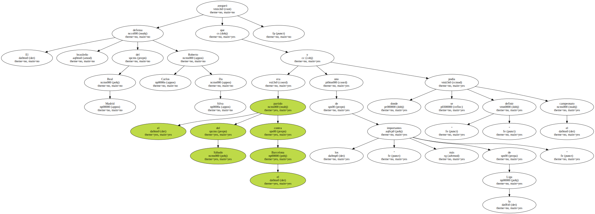" No sé como se debe jugar al Barcelona " , comentó Roberto Carlos , " pero debemos seguir en el camino en el que nos encontramos ".
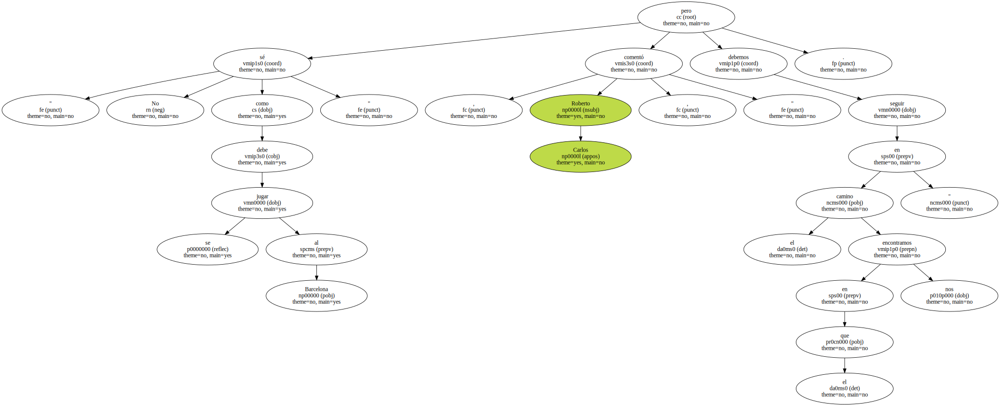" Estamos en un momento dulce " , declaró el defensa brasileño.
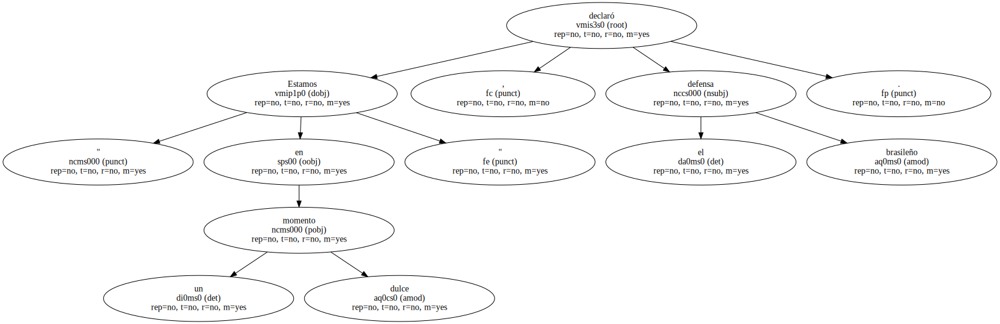El jugador quiso huir en todo momento de favoritismos.
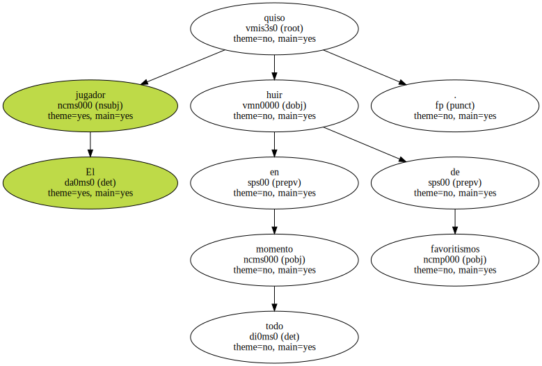" Si entramos en el campo pensando que somos favoritos , perdemos seguro . Hemos de tener los pies en el suelo y demostrar la superioridad en el campo " , dijo.

Recién llegado de Tailandia de jugar un partido amistoso con la selección de Brasil , Roberto estuvo entrenando en la Ciudad Deportiva con total normalidad.
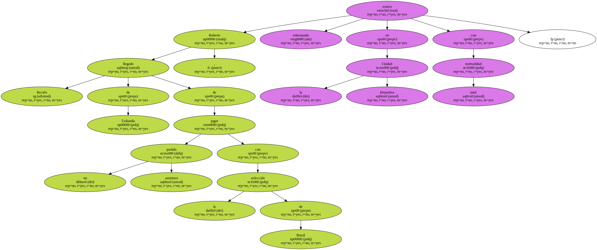" Estoy un poco cansado por el largo viaje , pero he dormido unas cinco horas y estoy bien . Hoy descansaré en casa y mañana estaré a tope . Estoy preparado para ganar el Sábado al Barcelona " , enfatizó el lateral izquierdo del Real Madrid.
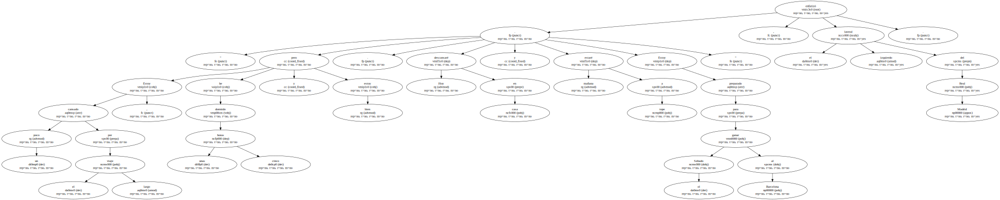Roberto aseguró que no ha hablado con Rivaldo del choque entre eternos rivales que Real Madrid y Barcelona disputarán el Sábado en el estadio Santiago Bernabéu.
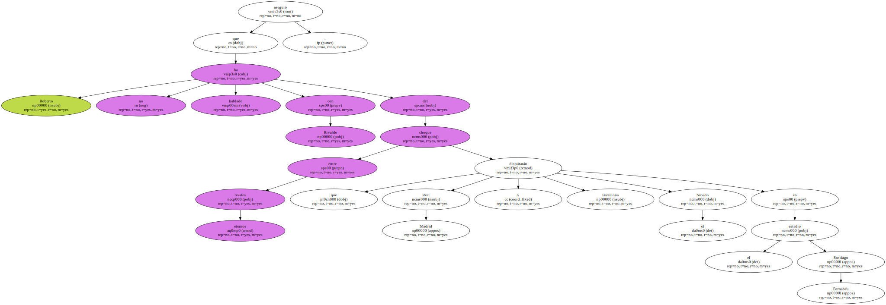" No hemos tenido ni tiempo de hablar . Rivaldo llegó un día más tarde que yo y apenas hemos tenido tiempo de entrenar , jugar y volar " , indicó.
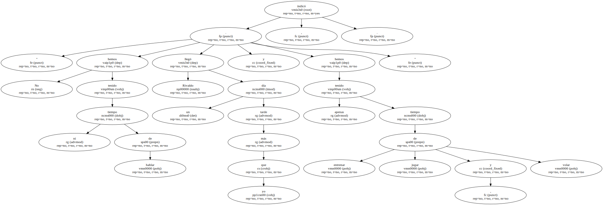La importancia de Rivaldo estaba fuera de toda duda para el jugador madridista.
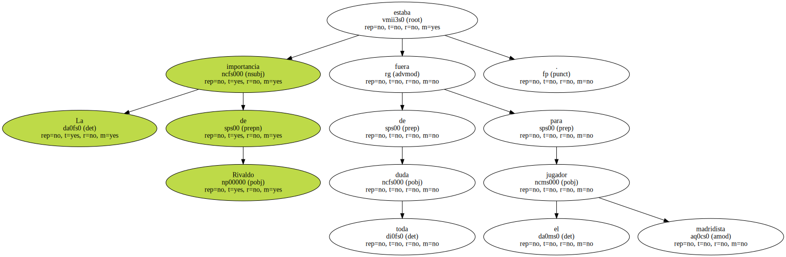" Está muy bien . No me sorprende nada de lo que haga . Siempre tiene la cabeza tranquila y es el número uno del mundo " , subrayó.
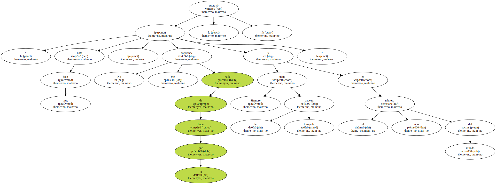Desde que estábamos en el Palmeiras ya sabía que llegaría a un altísimo nivel.

Sobre la presencia de Raúl , Roberto fue precavido.
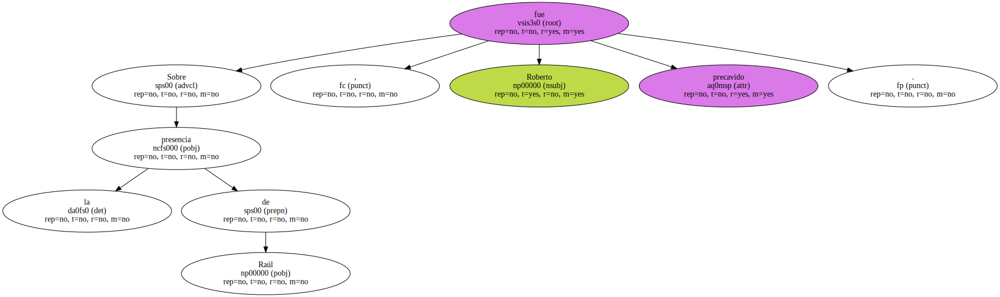" No sé como está Raúl . pero el Madrid es un equipo muy fuerte y salga uno u otro jugador , todos saldrán a hacer lo mejor para el equipo " , dijo.
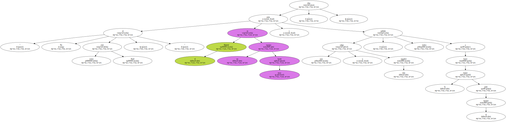" Estamos deseando que comience el partido . El empate conseguido en Valencia nos ha dado más moral y además contaremos con la afición , que está deseando que hagamos un gran partido y que seguro que nos apoyará desde el comienzo " , finalizó Roberto Carlos.
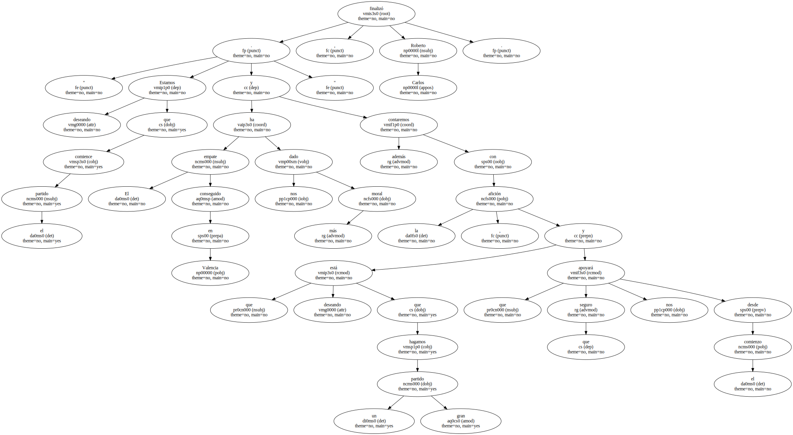